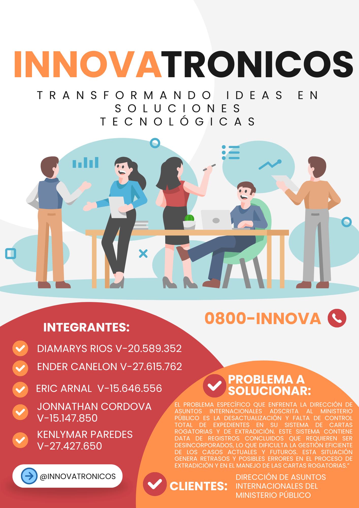

El presente portafolio reune todas las actividades existentes en la SD2: "Hackeando el Futuro", tales como: el Desafio de los Seis Sombreros, el Desafio de Equipos de Trabajos y Aplicar las dos primeras fases de la metodología Desing Thinking. A su vez, el objetivo de un portafolio creativo es mostrar y documentar el proceso de aprendizaje y los logros alcanzados, así como fomentar la reflexión, el autoaprendizaje y la creatividad entre los estudiantes.
Introducción
Contenido
- Introducción
- Sobre Nosotros
- Desafio: Seis Sombreros
- Evidencia
- Objetivo del Ejercicio
- Reseña de la Actividad
- Reflexión de la Actividad
- Desafio: Equipo de Trabajo
- Evidencia
- Objetivo del Ejercicio
- Reseña de la Actividad
- Reflexión de la Actividad
- Desing Thinking: Empatizar
- Mapa de Empatia
- Evidencia
- Objetivo del Ejercicio
- Reseña de la Actividad
- Reflexión de la Actividad
- Desing Thinking: Definir
- Punto de Vista ("POV")
- Flyer
- Evidencia
- Objetivo del Ejercicio
- Reseña de la Actividad
- Reflexión de la Actividad
- Conclusiones
Sobre Nosotros
Diamarys Ríos
Ender Canelón
Eric Arnal
Jonnathan Cordova
Kenlymar Paredes
Desafio: Seis Sombreros


Evidencia
Objetivo del Ejercicio
Desarrollar técnicas que permitan crear un marco de referencia para la resolución de controversias en diversas áreas; es decir permitir que los procesos cerebrales que tienen lugar durante la toma de decisiones, se conviertan en procedimientos prácticos y sencillos de explicar; asimismo, que brinden la posibilidad a los participantes de obtener diferentes perspectivas, mediante cambios de sombreros.
Reseña de la Evidencia
Nombres: Diamarys Rios, Ender Canelon, Eric Arnal, Jonnathan Cordova y Kenlymar Paredes
Fecha: Lunes, noviembre 27 de 2023
Breve Descripción: Identifique un problema asociado al área de informática Aplique la técnica de los seis sombreros, haciendo las siguientes combinaciones: Blanco + amarillo Rojo+ verde Negro + rojo Amarillo + Azul Verde+ azul Presente los aportes y conclusiones desde el sombrero azul
Reflexión del Aprendizaje
¿Que aprendimos?
Ha fomentar el pensamiento paralelo. El pensamiento paralelo significa que todos los miembros del grupo piensan en la misma dirección y cuanto más tiempo se trabaje de este modo, más influyente será el equipo.
¿Como lo podemos aplicar en el mundo laboral?
Ofrece en el área laboral una forma de planificar los procesos de pensamiento de forma detallada y cohesionada. Con seis sombreros para pensar, se puede saber exactamente lo que vas a hacer en cada paso del proceso. Así, cubrir todas las áreas necesarias. El resultado son procesos de pensamiento y trabajo más cohesionados.
Desafio: Equipo de Trabajo

Evidencia
Objetivo del Ejercicio
Fomentar la colaboración, la diversidad de ideas y habilidades, y promover un ambiente de trabajo eficiente. El nombre corto y el eslogan ayudan a identificar y unificar al equipo, mientras que identificar al cliente o usuario permite enfocarse en sus necesidades.
Reseña de la Evidencia
Nombre: Diamarys Rios, Ender Canelon, Eric Arnal, Jonnathan Cordova y Kenlymar Paredes
Fecha: Martes, Diciembre 05 de 2023
Breve Descripción: Formar equipos de mínimo 3 personas máximo 5 personas. Identificar el equipo con un nombre corto preferiblemente 1 ó 2 palabras, colocar un eslogan, identificar su cliente o usuario. El problema a resolver debe ser un caso real, relacionado con su área
Reflexión del Aprendizaje
¿Que aprendimos?
La importancia de la colaboración, la diversidad de ideas, de tener un nombre corto y un eslogan para identificar al equipo. Ha identificar un posible cliente o usuario. Además resolver un problema real relacionado con nuestra area.
¿Como lo podemos aplicar en el mundo laboral?
Aplicar estos principios en el mundo laboral formando equipos de 3 a 5 personas con habilidades complementarias, asignándoles un nombre y eslogan que reflejen la identidad del equipo, identificando claramente al cliente o usuario al que se enfocarán y seleccionando un problema real relacionado con el área de trabajo del equipo para resolverlo de manera colaborativa. Esto fomentará la eficiencia y la creatividad en el trabajo en equipo..
Desing Thinking: Empatizar
Mapa de Empatia
Para una mejor visualización. Click Aquí
Evidencia
Objetivo del Ejercicio
Comprender las necesidades, deseos y desafíos de los usuarios para poder diseñar soluciones que realmente satisfagan sus necesidades. La empatía ayuda a obtener una perspectiva profunda y genuina de los usuarios, lo que a su vez permite generar ideas y soluciones más centradas en el ser humano.
Reseña de la Evidencia
Nombre: Diamarys Rios, Ender Canelon, Eric Arnal, Jonnathan Cordova y Kenlymar Paredes
Fecha: Lunes, Diciembre 12 de 2023
Breve Descripción: Luego de identificar el problema a resolver se debe aplicar la primera fase del Desing Thinking, la cual es Empatizar mediante el uso de tecnicas o herramientas.
Reflexión del Aprendizaje
¿Que aprendimos?
Ha comprender mejor las necesidades y deseos de los usuarios, ha obtener una perspectiva más profunda de sus desafíos y a generar soluciones más centradas en el ser humano. La empatía nos ha ayudado a obtener información valiosa para informar y guiar el proceso de diseño, lo que puede llevar a la creación de productos o servicios más relevantes y efectivos.
¿Como lo podemos aplicar en el mundo laboral?
La fase de empatizar nos permite interactuar directamente con los clientes o usuarios, escuchando activamente sus necesidades, observando sus comportamientos y realizando entrevistas o encuestas. Además, de utilizar herramientas como mapas de empatía, personas o historias de usuario para comprender mejor sus experiencias y emociones.Con esta información nos permite diseñar soluciones más adecuadas y centradas en las necesidades reales de los usuarios en nuestros entornos laborales.
Desing Thinking: Definir
Punto de Vista ("POV")
Para una mejor visualización. Click Aquí
Flayer
Para una mejor visualización. Click Aquí
Evidencia
Objetivo del Ejercicio
Entender a fondo el problema o desafío que se quiere resolver permite establecer una visión clara del objetivo a alcanzar.
Reseña de la Evidencia
Nombre: Diamarys Rios, Ender Canelon, Eric Arnal, Jonnathan Cordova y Kenlymar Paredes
Fecha: Lunes, noviembre 27 de 2023
Breve Descripción: Aplicar la segunda fase del Desing Thinking, la cual es Definir mediante el uso de Flyer que contenga el titulo del Proyecto y un planteamiento del problema.
Reflexión del Aprendizaje
¿Que aprendimos?
Ha determinar claramente el problema o desafío a resolver nos permite tener una base sólida para desarrollar soluciones creativas y efectivas. Tambien a diseñar soluciones centradas en las necesidades y expectativas de los usuarios.
¿Como lo podemos aplicar en el mundo laboral?
Ha abordar problemas o desafíos en nuestros trabajos de manera creativa y centrada en las necesidades de los usuarios o clientes. Tambien utilizarlo para desarrollar nuevos productos o servicios, mejorar procesos internos, resolver problemas de comunicación o diseñar experiencias de usuario más satisfactorias.
Conclusiones
Las diferentes estrategias propuestas en la sesión didactica 2 fomentan un pensamiento creativo, colaborativo y centrado en el usuario, lo que puede conducir a la generación de ideas innovadoras, soluciones efectivas y una mejor comprensión de los problemas a resolver. Además, mostrar estas habilidades en un portafolio demuestra nuestras capacidades como futuros ingenerios para abordar desafíos de manera integral y brinda una ventaja competitiva en el mundo laboral.